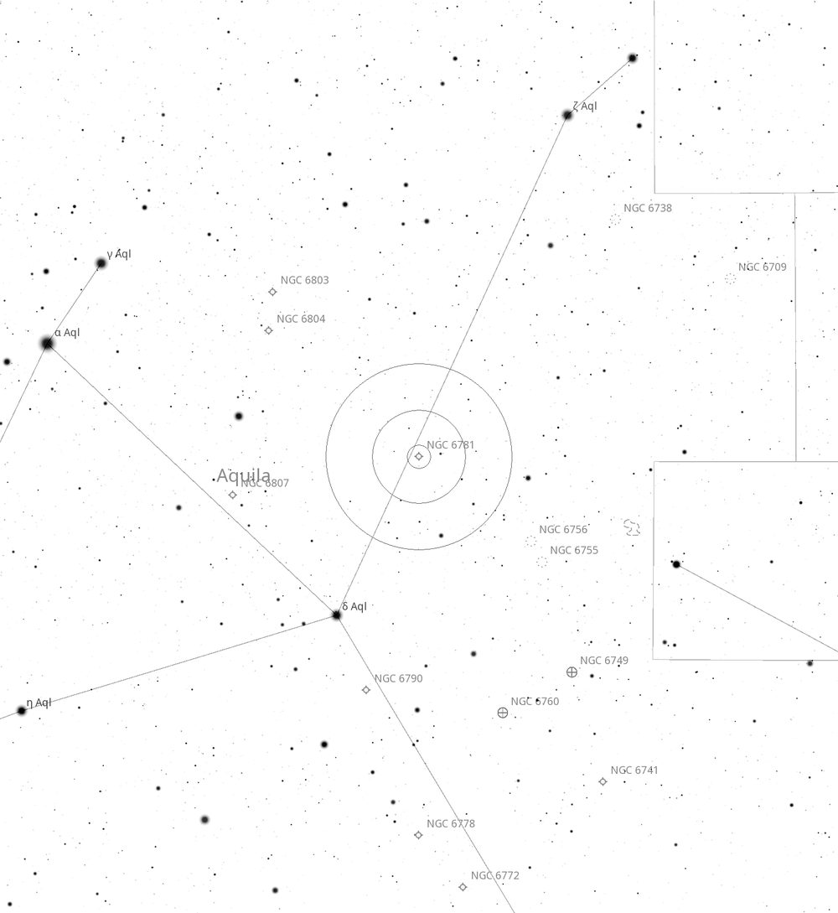
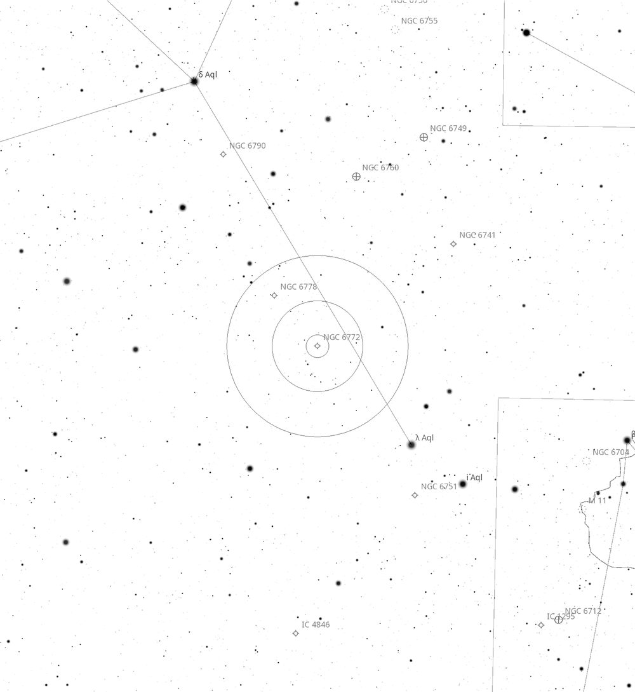
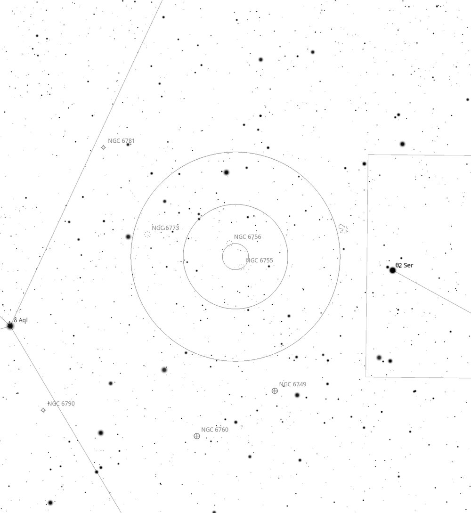
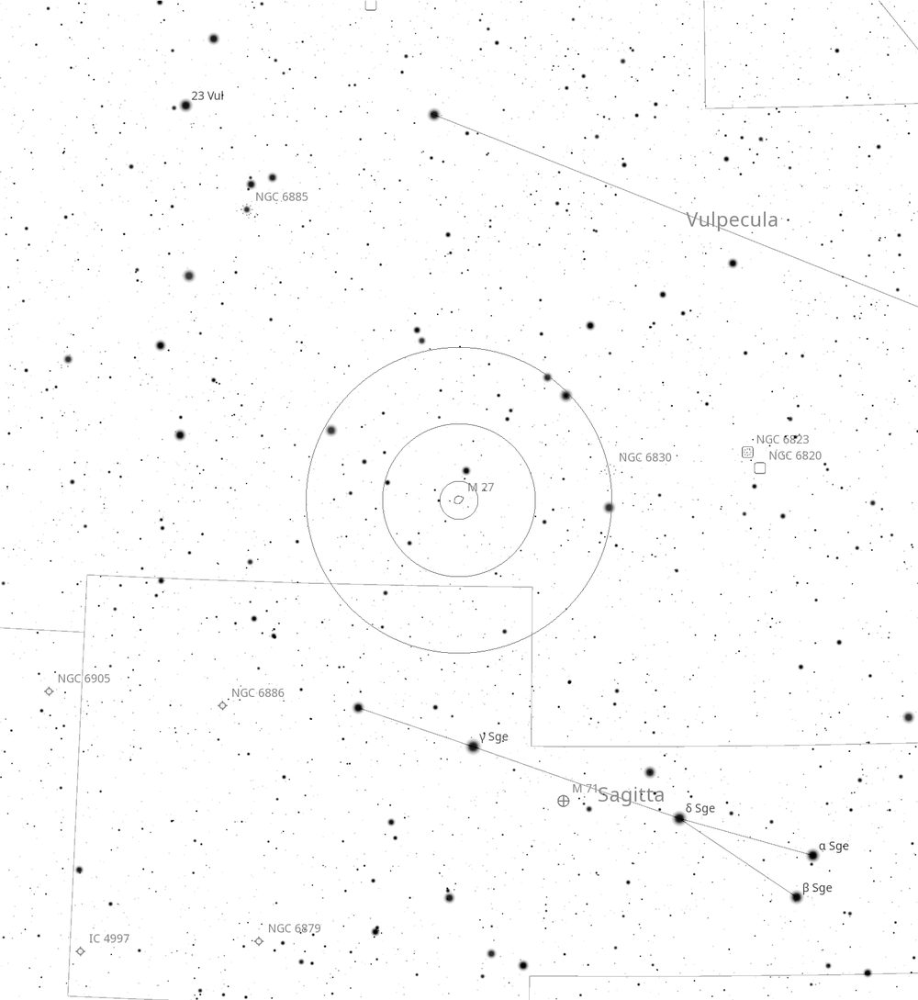
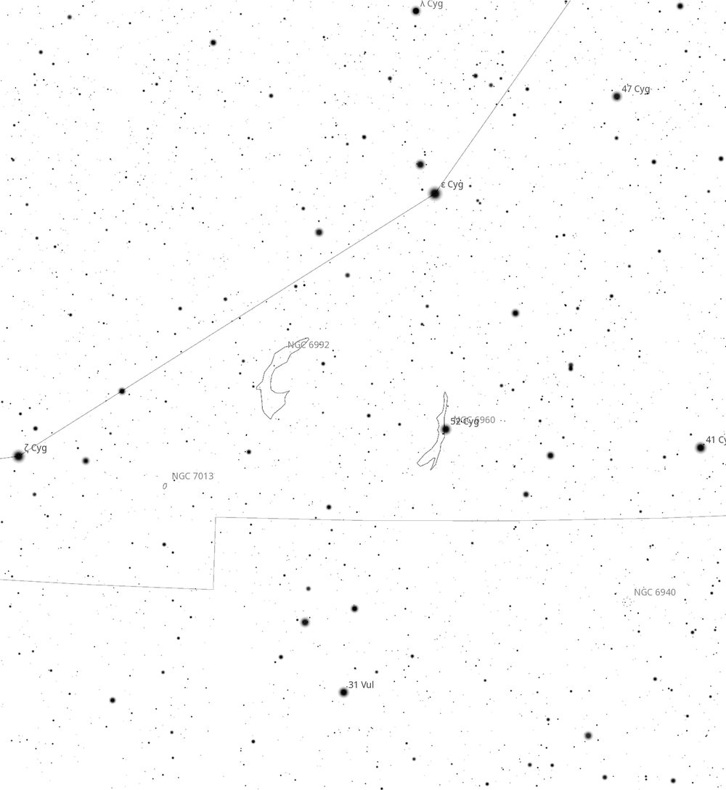
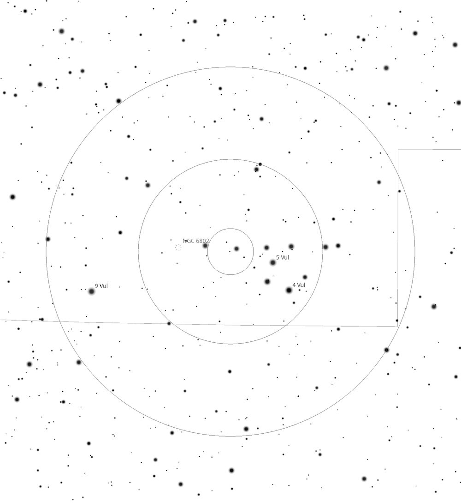
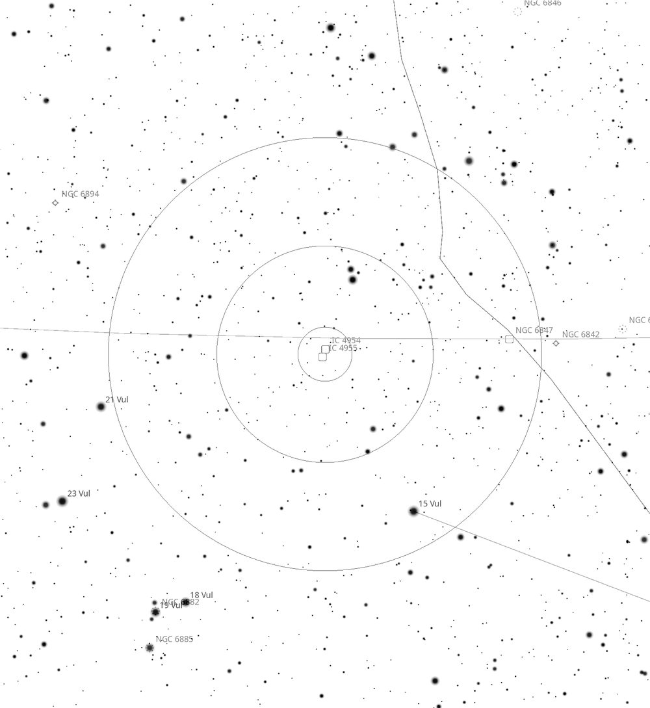

Deep Sky Notes — August 2026
------------------------------------------------------------------------------------------------------------------
Wiruna Wanderings August 2026 – By Alessandro Spina
------------------------------------------------------------------------------------------------------------------
The August Wiruna weekend provided us with clear skies on Friday night, so on Friday afternoon we wheeled the Club’s 22-inch out of the shed to take advantage. With a northern-hemisphere visitor and some new members in attendance we started the night showing off some of the highlights of the southern hemisphere, including NGC 3766 (the Pearl Cluster), NGC 5139 (Omega Centauri), NGC 3372 (the Eta Carinae Nebula), NGC 5128 (Centaurus A), NGC 4945, and NGC 2070 (the Tarantula Nebula). I also got the chance to tick off a few objects on my observing list. First job was to confirm a sighting from the previous month, NGC 6164/6165, the “Dragon’s Egg” Nebula in Norma. With the 31mm eyepiece in (90× magnification, 0.9° TFOV), the bright star, HD 148937, that forms the centre of the nebula is easy to spot. With the addition of a UHC filter a faint hazy ring of light surrounding the star starts to reveal itself. However, the ring is not uniform in brightness, with the bottom-right lobe being significantly brighter than the top-left — which is why Herschel catalogued the two halves as separate objects. This circular “bagel” shaped ring surrounding the main star makes it resemble a planetary nebula rather than an emission nebula. Last month, I could pick up those brighter lobes in the Club’s 17.5-inch, but it took the Club’s 22-inch plus a UHC filter to bring out the complete ring around the star, albeit faint in parts. The star at its heart, HD 148937, is one of only a handful of magnetic O-type stars known and is now thought to be the product of a stellar merger — the nebula being material thrown off in the process.
With the Milky Way sitting high in the sky, I decided to turn my attention to the northern end of the sky. Aquila (the Eagle) is easy to spot rising in the north-east sky this time of year, with α-Aquilae (Altair) shining at magnitude 0.77, flanked closely by β-Aquilae (Alshain) and γ-Aquilae (Tarazed). From there you can trace out the “body” along δ-Aquilae and λ-Aquilae, and the V-shaped “wings” formed by ζ-Aquilae and θ-Aquilae. Aquila is a constellation with a little bit of everything, but it is particularly rich in planetary nebulae.

First stop was NGC 6781, a planetary nebula about 4° NW of δ-Aquilae (see Figure 1). To find this planetary, point the Telrad about a third of the way along the line between δ-Aquilae and ζ-Aquilae. The 1.8′ wide disk is large compared to your typical planetary nebula, making it easy to pick out. With the 22mm eyepiece in (127× magnification, 0.6° TFOV) and an OIII filter, the grey disk has a well-defined circular bubble shape which dims in brightness towards the centre. The bottom edge of the disk seemed a little brighter to my eye. This combination gives the nebula a more three-dimensional appearance, consistent with its name, the “Snowglobe” Nebula. The nebula is in fact a barrel-shaped shell seen almost exactly down its axis, which is why it appears from our perspective as a ring that fades towards the middle. At magnitude 11.4 this object does not require dark skies or a large scope: I was able to easily pick out the nebula from my back deck at home (Bortle 5 skies) in my 12-inch Dob with the help of an OIII filter.

NGC 6772 is another planetary nebula in Aquila and lies about 4,200 light-years away (see Figure 2). This planetary is smaller, at 1.1′ across, and noticeably fainter at magnitude 12.7. The disk appears more elongated and less well defined than NGC 6781, with a distinct fuzziness towards the edges. With the 22mm eyepiece, its oval-shaped disk had a mottled appearance, almost resembling a faint unresolved globular cluster. An OIII filter helped improve the contrast. I am not certain I could detect the darker core visible in photographs; it may have needed more magnification. Images of the nebula show the distorted halo caused by overlapping shells of gas ejected during different stages of the star’s death.

Next on the list was the open cluster NGC 6755, also in Aquila (see Figure 3). It forms a visual double with the smaller open cluster NGC 6756, 30′ away — evidence suggests the pairing is just a line-of-sight coincidence. NGC 6755 itself is 14′ across and sits at magnitude 7.5. It is a moderately rich cluster with 10–20 brighter members forming a halo of brighter stars enclosing a denser collection at the core of the cluster. With the 31mm eyepiece in, you can also squeeze NGC 6756 into the same field of view. NGC 6756 is a much smaller, fainter and more compact collection of 10–15 stars, at magnitude 10.6. The brighter members are easy to make out, but averted vision (AV) fills out the core and makes it appear far richer. The two make for a nice contrasting visual pair.

As the night continued, I wandered into the constellation of Vulpecula. See Greg Bryant’s Universe article (August 2026, Vol 75 #08) for a more complete object list. This is a faint constellation with no stars brighter than 4th magnitude — the only way I can figure out where it is, is to look for the distinct shape of the constellation Sagitta nearby (see Figure 4). Although faint, the constellation holds one of the sky’s great planetary nebulae: M27, known as the Dumbbell Nebula. At 8′ across and magnitude 7.4 this takes up a sizeable chunk of the FOV in the 31mm. With the addition of the OIII filter the nebula really pops out. I had never viewed this object in such a large aperture scope and was amazed at how much detail and variation was apparent. The brightest layers that form the “dumbbell” shape jump out immediately, followed by the fainter outer lobes that complete the oval-shaped disk.

The highlight of the night for me was seeing the Veil Nebula in Cygnus (see Figure 5). Sitting low on the northern horizon, the constellation of Cygnus only grazes the horizon at our latitude, so the conditions are never fantastic — but they were good enough. The Veil itself is the leftover remains of a supernova, a supernova remnant (SNR). The whole complex is spread over about 3° of sky, equivalent to six full moons laid end to end, and is made up of several separately catalogued NGC objects. The brightest parts are the eastern and western edges of the Veil.
The western edge is classified as NGC 6960, also known as the Witch’s Broom Nebula. Starting with the 31mm and no filter, the bright yellow star 52 Cygni is the brightest star in the field, and a narrow trail of nebulosity tails off to its top-right. The real magic happened with the addition of an OIII filter. The filter immediately brought into sharp view an entirely new section of nebulosity that splits off into the two filaments that form the witch’s broom. The first remarkable thing about this object is its size. The only way to get any sense of the scale of it is to pan the telescope up and down. The second is the detail the filter brings out: within the trail of nebulosity there is brightness variation, knots and complex structure. NGC 6995, which makes up the eastern edge of the Veil along with NGC 6992, is just as visually striking. This side of the remnant is again a richly detailed long filament that extends beyond the field of view and requires you to pan the telescope up and down to soak it all in. The trailing swirls that hang off the main filament made me think of the trail of smoke behind a sky-writing plane, slowly dispersing on a windy day. The Veil Nebula is the cosmic version of that — except this trail runs roughly 110 light-years from end to end, and the star that made it exploded 10,000 to 20,000 years ago, which would have been a naked-eye event for anyone living then. It is always amazing to think of that debris being ejected into interstellar space, seeding the next stellar nursery with the heavy elements and materials needed to form new planets and stars.

Next, I hopped over to NGC 6802, also in Vulpecula (see Figure 6). This is a small, dense cluster roughly 3.3′ across. It also has a relatively low surface brightness, at magnitude 8.8. The brighter members of the core are easily resolved, and the compactness of the core gives it the appearance of a loose globular cluster. Looking through the 8×50 finderscope I also noticed a bright collection of stars sitting in a clear coathanger shape. NGC 6802 happens to sit 1.2° from the centre of that asterism — the “Coathanger”, or Brocchi’s Cluster, catalogued as Collinder 399 — tucked just off its eastern end. Brocchi’s Cluster was listed as a genuine open cluster for decades, but Hipparcos and later Gaia parallaxes showed its stars lie at wildly different distances.

IC 4954 and IC 4955 rounded out the night (see Figure 7). With the 35mm eyepiece in (80× magnification, 0.9° TFOV) this is a tricky object. The main nebula appears like an elliptical galaxy: a bright, almost stellar core surrounded by a fainter diffuse halo. A trio and a pair of stars sit above and point to the companion nebula, which is smaller and fainter. It requires AV to really discern anything. The addition of an OIII or UHC filter did not seem to help at all, which makes sense given it is a reflection nebula. That loose collection of 10+ stars associated with the nebulae is the young cluster Roslund 4; the whole complex is an active star-forming region only a few million years old.
Saturday night teased with some clear skies after sunset. I enjoyed 30 minutes of hunting down some wide-field clusters and nebulae with Rodney’s 3-inch refractor before the bands of cloud started rolling in fast from the east. All up, a good weekend of observing.
Clear skies.
Table of Targets
| Name | Type | Constellation | RA (J2000) | DEC (J2000) | Mag | Size |
|---|---|---|---|---|---|---|
| NGC 6164/5 | Emission Nebula | Norma | 16h 33m 52s | -48° 06′ 40″ | - | 8.0′ |
| NGC 6781 | Planetary Nebula | Aquila | 19h 18m 28s | +06° 32′ 19″ | 11.4 | 1.8′ |
| NGC 6772 | Planetary Nebula | Aquila | 19h 14m 36s | -02° 42′ 25″ | 12.7 | 1.1′ |
| NGC 6755 | Open Cluster | Aquila | 19h 07m 46s | +04° 13′ 26″ | 7.5 | 14′ |
| NGC 6756 | Open Cluster | Aquila | 19h 08m 43s | +04° 42′ 40″ | 10.6 | 4.0′ |
| M27 (NGC 6853) | Planetary Nebula | Vulpecula | 19h 59m 36s | +22° 43′ 16″ | 7.4 | 8.0′ |
| NGC 6960 | Supernova Remnant | Cygnus | 20h 45m 38s | +30° 42′ 30″ | 7.0 | - |
| NGC 6995 | Supernova Remnant | Cygnus | 20h 57m 00s | +31° 13′ 00″ | - | - |
| NGC 6802 | Open Cluster | Vulpecula | 19h 30m 36s | +20° 15′ 43″ | 8.8 | 3.3′ |
| IC 4954/55 | Reflection Nebula | Vulpecula | 20h 04m 48s | +29° 15′ 00″ | - | 3.0′ |